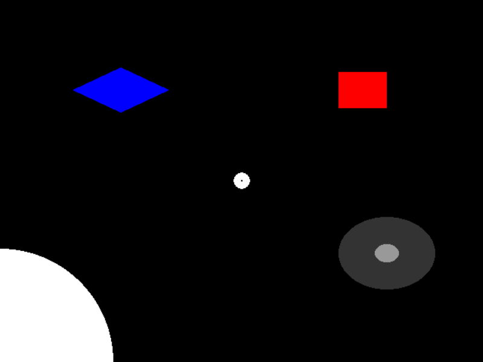

This example demonstrates the different mouse click functionality in the ExperimentController class.
Script output:
2015-05-18 11:21:27,814 - INFO - Expyfun: Setting up Pyglet audio
2015-05-18 11:21:27,871 - INFO - Expyfun: Setting up screen
2015-05-18 11:21:28,086 - EXP - Expyfun: Set screen visibility True
2015-05-18 11:21:28,099 - INFO - Expyfun: Initializing dummy triggering mode
2015-05-18 11:21:28,102 - INFO - Expyfun: Initialization complete
2015-05-18 11:21:28,103 - EXP - Expyfun: Subject: foo
2015-05-18 11:21:28,103 - EXP - Expyfun: Session: 001
2015-05-18 11:21:46,798 - EXP - Expyfun: Audio stopped and reset.
Python source code: mouse_demo.py
# Author: Ross Maddox <rkmaddox@uw.edu>
#
# License: BSD (3-clause)
import matplotlib.pyplot as plt
from expyfun import ExperimentController
import expyfun.analyze as ea
from expyfun.visual import (Circle, Rectangle, Diamond, ConcentricCircles,
FixationDot)
print(__doc__)
wait_dur = 3.0
msg_dur = 1.5
with ExperimentController('MouseDemo', screen_num=0,
window_size=[640, 480], full_screen=False,
stim_db=0, noise_db=0, output_dir=None,
participant='foo', session='001') as ec:
###############
# toggle_cursor
ec.toggle_cursor(True)
ec.screen_prompt('Now you see it.', max_wait=msg_dur, wrap=False)
ec.toggle_cursor(False)
ec.screen_prompt("Now you don't (maybe--Windows is buggy)",
max_wait=msg_dur, wrap=False)
ec.toggle_cursor(True)
################
# wait_one_click
ec.screen_text('Press any mouse button.', wrap=False)
ec.flip()
ec.wait_one_click()
ec.toggle_cursor(False)
ec.screen_text('Press the left button.', wrap=False)
ec.flip()
ec.wait_one_click(live_buttons=['left'], visible=True)
ec.wait_secs(0.5)
ec.toggle_cursor(True)
###########################
# listen_clicks, get_clicks
ec.screen_text('Press a few buttons in a row.', wrap=False)
ec.flip()
ec.listen_clicks()
ec.wait_secs(wait_dur)
clicks = ec.get_clicks()
ec.screen_prompt('Your clicks:\n%s' % str(clicks), max_wait=msg_dur)
###########################
# get_mouse_position
ec.screen_prompt('Move the mouse around...', max_wait=msg_dur, wrap=False)
stop_time = ec.current_time + wait_dur
while ec.current_time < stop_time:
ec.screen_text('%i, %i' % tuple([p for p in
ec.get_mouse_position()]),
wrap=False)
ec.check_force_quit()
ec.flip()
###########################
# wait_for_click_on
ec.toggle_cursor(False)
ec.wait_secs(1)
c = Circle(ec, 150, units='pix')
r = Rectangle(ec, (0.5, 0.5, 0.2, 0.2), units='norm', fill_color='r')
cc = ConcentricCircles(ec, pos=[0.6, -0.4],
colors=[[0.2, 0.2, 0.2], [0.6, 0.6, 0.6]])
d = Diamond(ec, (-0.5, 0.5, 0.4, 0.25), fill_color='b')
dot = FixationDot(ec)
objects = [c, r, cc, d, dot]
ec.screen_prompt('Click on some objects...', max_wait=msg_dur, wrap=False)
for ti in range(3):
for o in objects:
o.draw()
screenshot = ec.screenshot()
ec.flip()
click, ind = ec.wait_for_click_on(objects)
objects[ind].draw()
ec.flip()
ec.wait_secs(0.2)
plt.ion()
ea.plot_screen(screenshot)
Total running time of the example: 19 seconds